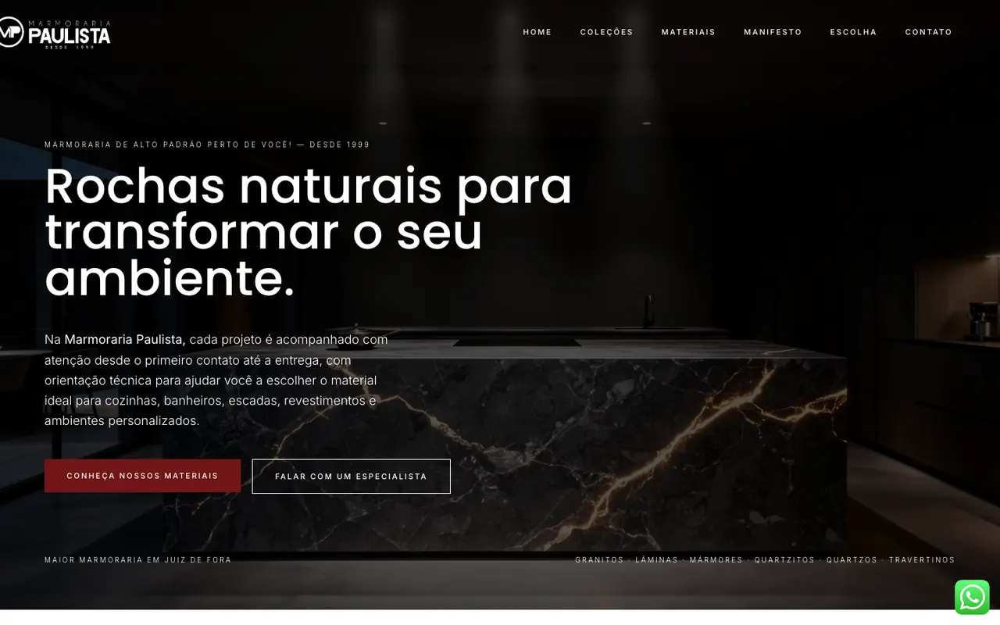
Site institucional com as coleções de mármores, granitos, quartzitos e travertinos organizadas para o cliente conhecer o material antes de falar com a loja.
Ver projeto ↗João Pedro, conhecido como Malta. Designer gráfico e desenvolvedor web: crio sites, landing pages e fotografia para quem ainda não está na internet, ou quer melhorar o que já tem. 7 anos na área criativa.
Coloco sua marca na internet do jeito certo. Sites e landing pages que unem design, código e boas imagens. E, à parte, fotografia para ensaios, eventos e marcas.
+150 páginas no ar, feitas na QH4 Growth e de forma independente.
Filtre por categoria e clique para visitar cada projeto.

Site institucional com as coleções de mármores, granitos, quartzitos e travertinos organizadas para o cliente conhecer o material antes de falar com a loja.
Ver projeto ↗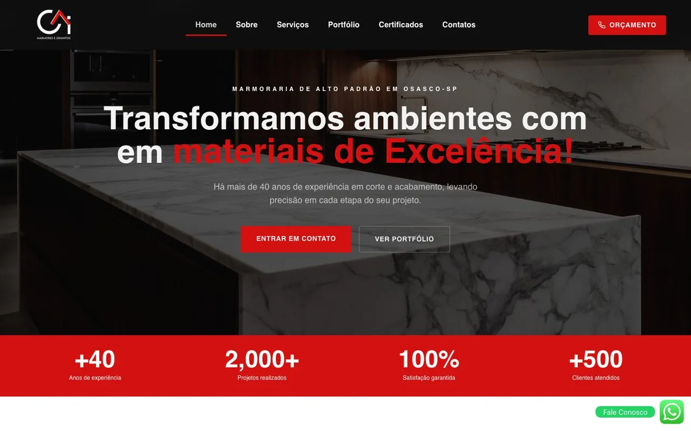
Site com serviços, materiais, regiões atendidas e projetos entregues, estruturado para quem procura marmoraria em Osasco encontrar a GVI.
Ver projeto ↗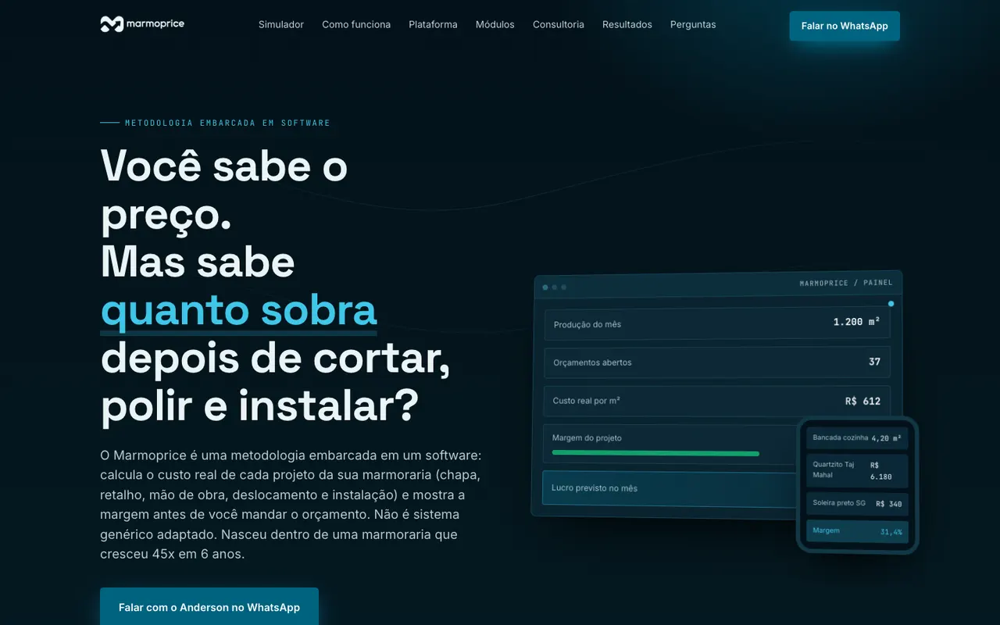
Apresentar um sistema de precificação e gestão, mostrando ao dono da marmoraria quanto sobra de cada projeto antes de fechar o orçamento.
Ver projeto ↗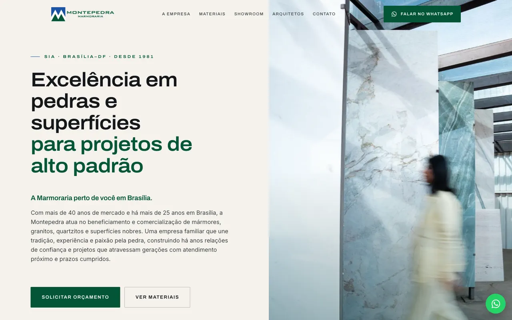
Posicionar a marmoraria de Brasília para arquitetos e projetos de alto padrão, com linhas de rochas, showroom e beneficiamento próprio.
Ver projeto ↗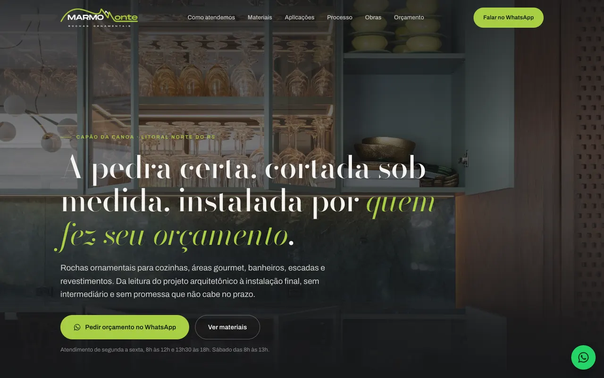
Mostrar que quem orça é quem executa: atendimento direto com o marmorista, etapas claras e obras entregues no litoral gaúcho.
Ver projeto ↗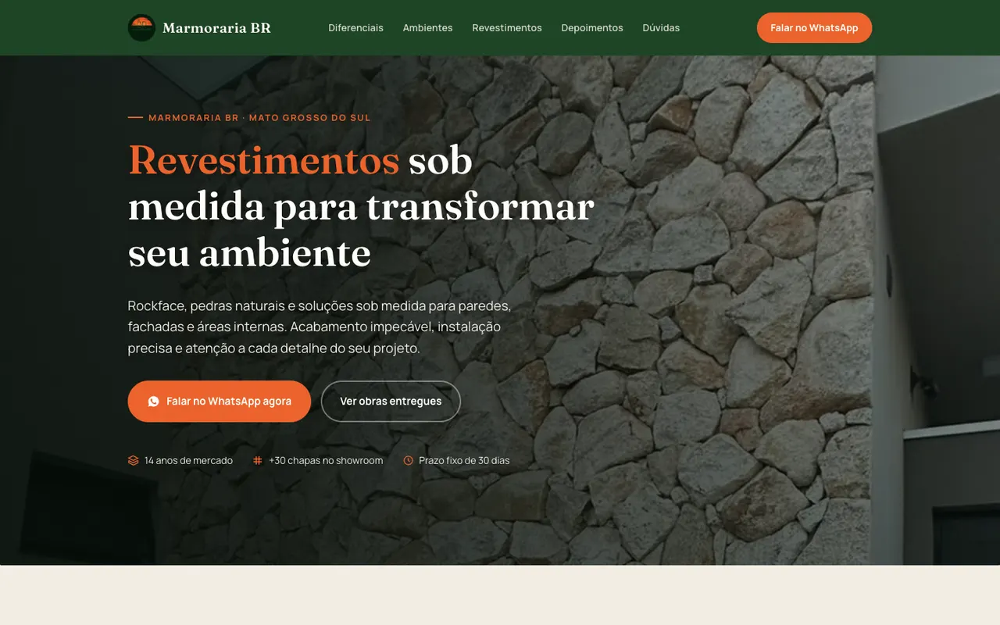
Página focada em revestimentos de pedra natural, como rockface, moledo e travertino, levando o visitante direto ao orçamento pelo WhatsApp.
Ver projeto ↗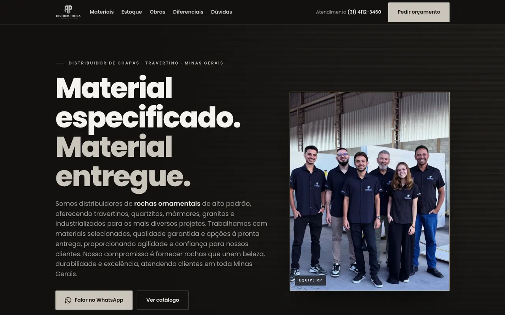
Falar com arquitetos e construtores de Minas: chapas organizadas por material e atendimento consultivo para especificar a pedra certa.
Ver projeto ↗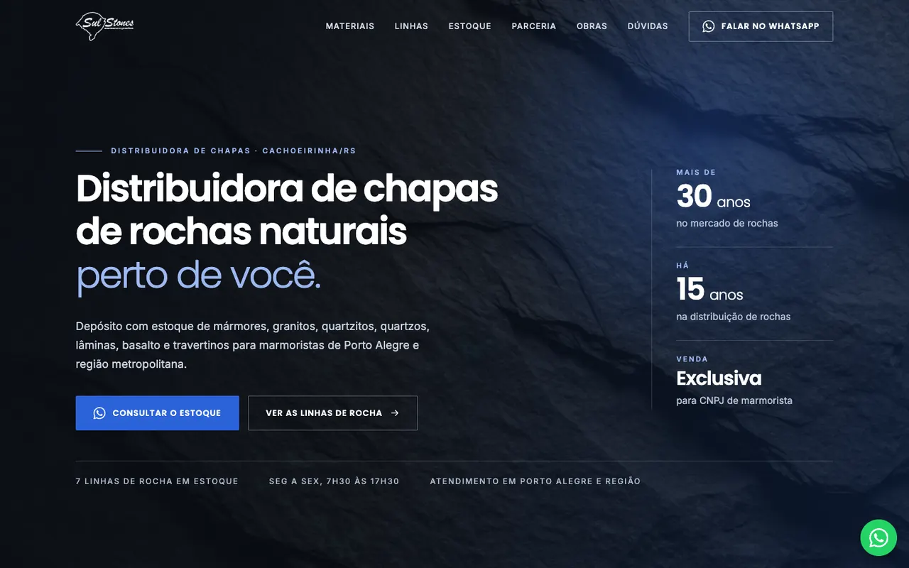
Página para marmoristas de Porto Alegre e região conhecerem as linhas de rocha e consultarem o estoque de chapas.
Ver projeto ↗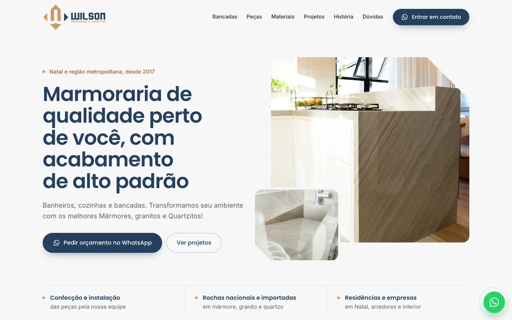
Gerar pedidos de orçamento de bancadas e peças sob medida em Natal, ajudando o cliente a escolher entre mármore, granito e quartzo.
Ver projeto ↗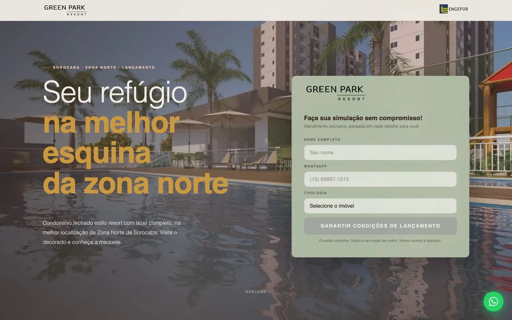
Lançamento de um condomínio-resort em Sorocaba com plantas, implantação e tour, e um formulário de simulação para captar interessados.
Ver projeto ↗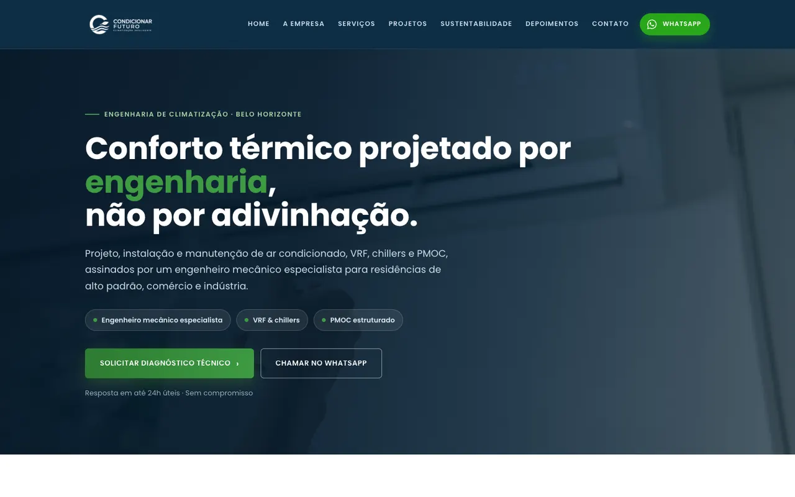
Apresentar projetos de climatização assinados por engenheiro, como VRF, chillers e PMOC, e gerar pedidos de diagnóstico técnico em BH.
Ver projeto ↗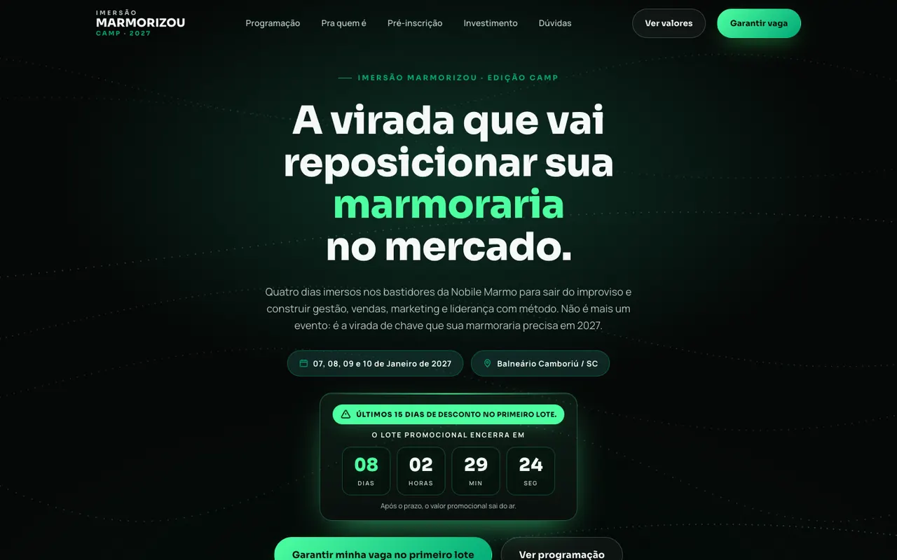
Página de vendas de uma imersão presencial de quatro dias para donos de marmoraria, com programação, lotes e contagem regressiva.
Ver projeto ↗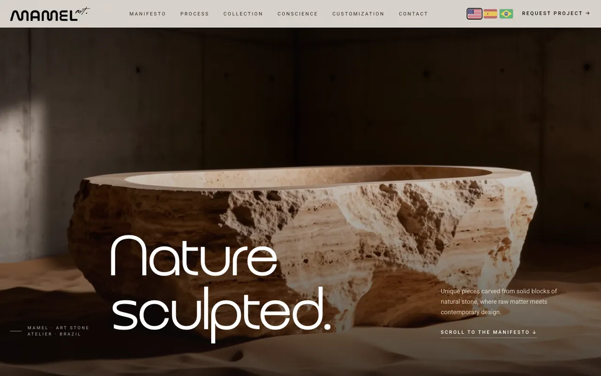
Site multilíngue para um ateliê que esculpe peças únicas em blocos de pedra natural, com linguagem de galeria de arte.
Ver projeto ↗Apresentar a assessoria e o cerimonial de casamentos através das histórias de casais atendidos e facilitar o primeiro contato.
Ver projeto ↗Ensaios, esporte, bastidores e editorial como Malta Business.
Arraste as fotos para o lado ou use as setas.
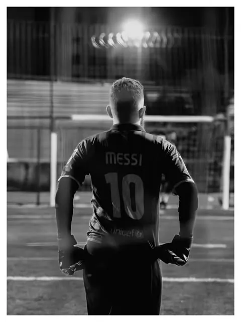
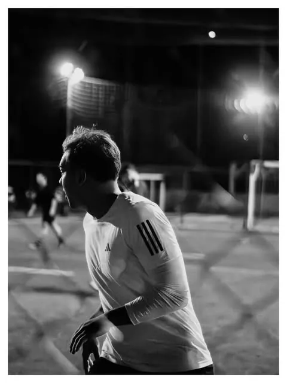
Registrar a partida noturna em preto e branco, deixando a luz dos refletores desenhar cada jogador.
EntregueSeleção de fotos tratadas em P&B para as redes sociais.


Acompanhar o treino de perto e capturar esforço e movimento reais, sem pose.
EntregueFotos em P&B e cor para divulgação do treino.
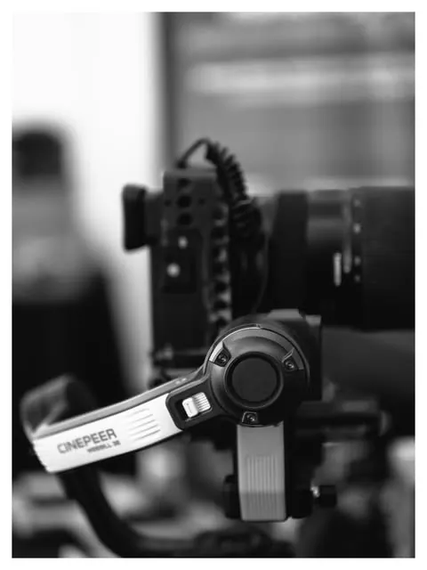

Mostrar o outro lado da produção: o equipamento, a credencial e o dia de trabalho por trás das imagens.
EntregueRegistros de bastidores para conteúdo de making of.

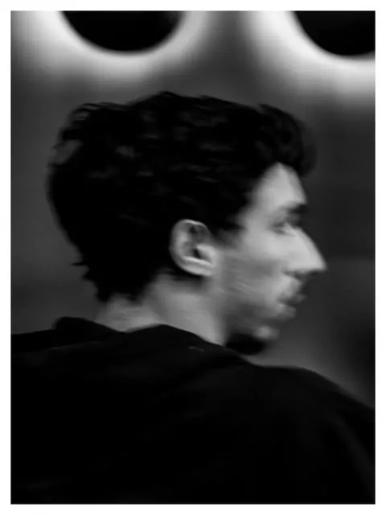
Detalhes de quem toca e retratos com luz natural e contraste forte.
EntregueSérie de fotos em P&B para perfil e divulgação.
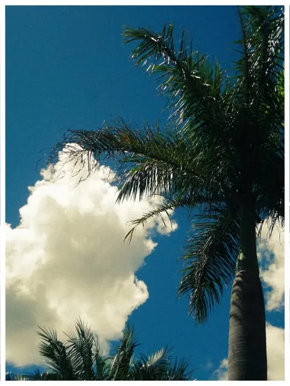

Cor, textura e tipografia como parte da imagem, para marcas com linguagem própria.
EntregueFotos editoriais para campanha e redes sociais.
Do briefing à entrega. Site no ar ou fotos na sua mão, sem surpresa no caminho.
O que os clientes falam
depois que o projeto fica pronto.
[Depoimento real do cliente aqui. Uma ou duas frases sobre como foi o projeto e o que mudou depois.]
[Depoimento real do cliente aqui. Uma ou duas frases sobre como foi o projeto e o que mudou depois.]
[Depoimento real do cliente aqui. Uma ou duas frases sobre como foi o projeto e o que mudou depois.]
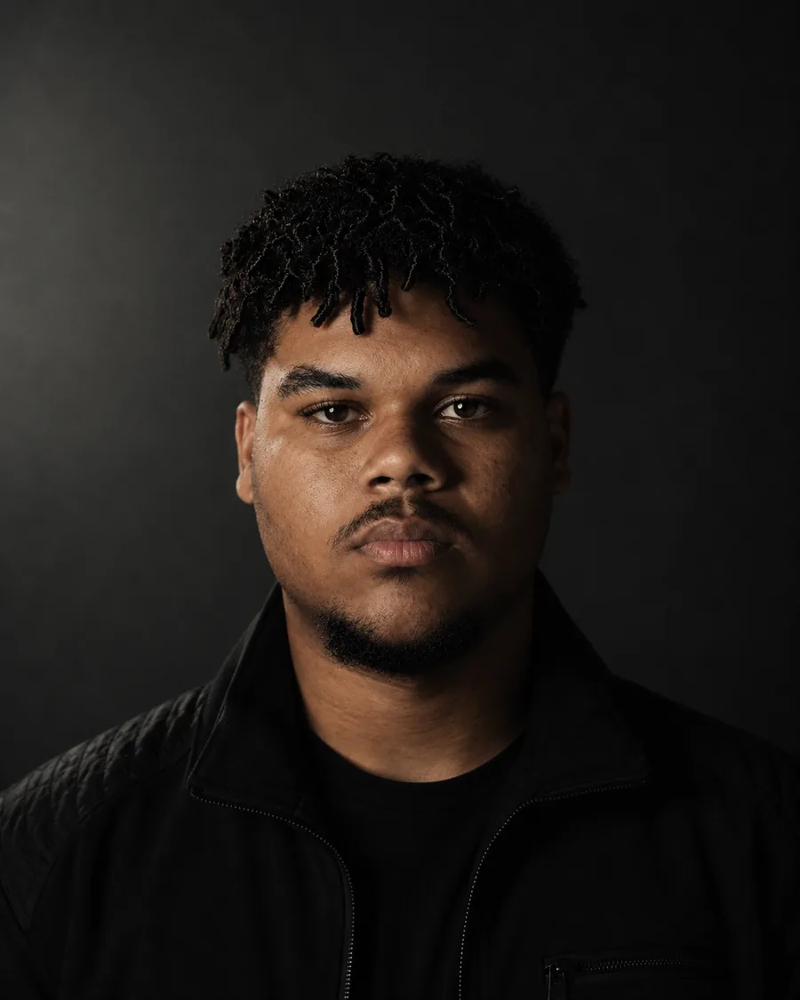
Malta ✱ BusinessConhecido como Malta, sou designer gráfico e desenvolvedor web, com 7 anos na área criativa. Formado em Design Gráfico pela UNA. Atuo na agência QH4 Growth e também de forma independente.
Como Malta Business, junto três frentes: sites, landing pages e fotografia. Para quem ainda não tem site e quer ter, quem já tem e quer melhorar, e quem busca fotos de verdade para a marca.